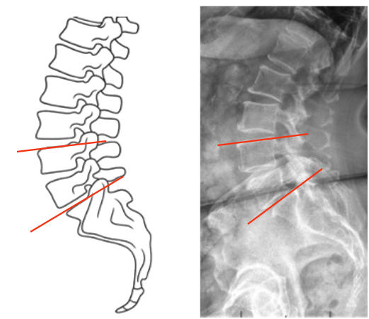

1) Description of Measurement
Segmental Lordosis quantifies the curvature of a defined lumbar motion segment, typically measured between two adjacent vertebrae (e.g., L4–S1 or L1–L5).
It represents the localized sagittal alignment of the lumbar spine, providing detailed information on curvature distribution, segmental compensation, and regional contribution to overall lumbar lordosis.
This measurement is especially important for assessing:
2) Instructions to Measure
3) Normal vs. Pathologic Ranges
Pathologic Findings:
4) Important References
Voutsinas SA, MacEwen GD. Sagittal profiles of the spine. Clin Orthop Relat Res. 1986;(210):235–242.
Roussouly P, Gollogly S, Berthonnaud E, Dimnet J. Classification of the normal variation in the sagittal alignment of the human lumbar spine and pelvis in the standing position. Spine. 2005;30(3):346–353.
Le Huec JC, Aunoble S, Philippe L, Nicolas P. Pelvic parameters: origin and significance. Eur Spine J. 2011;20(Suppl 5):564–571.
Barrey C, Roussouly P, Perrin G, Le Huec JC. Sagittal balance disorders in severe degenerative spine: can we identify the compensatory mechanisms? Eur Spine J. 2011;20(Suppl 5):626–633.
Schwab F, Lafage V, Boyce R, Skalli W, Farcy JP. Gravity line analysis in adult volunteers: age-related correlation with spinal parameters, pelvic parameters, and foot position. Spine. 2006;31(25):E959–E967.
5) Other info....
Segmental Lordosis allows for targeted analysis of specific motion segments contributing to overall lumbar curvature.
In surgical planning, restoration of appropriate distal segmental lordosis (especially L4–S1) is critical for re-establishing physiologic sagittal balance.
The majority (~65%) of lumbar lordosis originates from the L4–S1 region; loss here has a disproportionate impact on global alignment.
Over- or under-correction during spinal fusion can cause flat-back deformity, adjacent segment disease, or sagittal decompensation.
EOS imaging or stitched long-cassette lateral radiographs are preferred for consistent, low-distortion measurement.
Always report both regional (L1–L5) and segmental (L4–S1) lordosis when evaluating lumbar reconstructive or degenerative conditions.